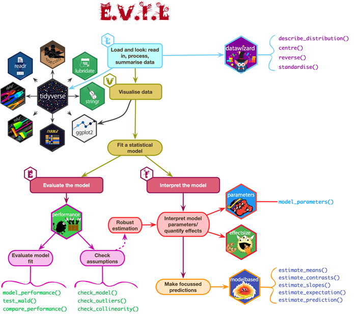
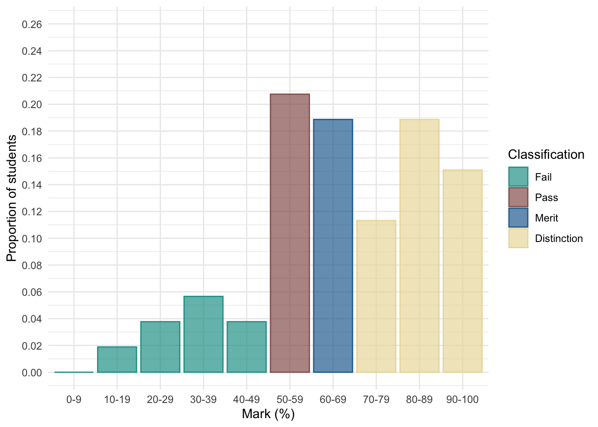

Take-Away papers
What are they and how to do them?
Professor Andy Field
University of Sussex


|
Overview
- Paper is released as an announcement on CANVAS
- You must submit a rendered
.htmlfile to CANVAS within 48 hours- Reasonable adjustments automatically added within the submission point
- The task deliberately requires you to make some of your own decisions
Report
You will be given:
- A research scenario and data
- A hypothesis
Write a report containing two sections:
- Code: Create all of the objects you need to write the report
- Report: Write a succinct report that interprets the results of your model with reference to the hypothesis
Code
Code overview
Create all objects you need in this section (tables, plots, models etc)
Tips
- Plan what you’re going to do before writing code - don’t just dive in
- Don’t print/view anything in this section
- Use the code that we teach
- Use of AI is NOT permitted
- Do not directly copy/paraphrase ANYTHING from the model answer
- Less is more
- Find the relevant
discovrtutorial - follow it - Don’t overthink it
- You don’t have to include everything you do
- Find the relevant
Report
Report overview
- Explain the model you have fitted and why.
- Include an equation that describes the main model you fit.
- Explain and justify any decisions you have made
- Interpret the main results

Report
Tips
- Follow the process of E.V.I.L.
- Look: summarize the data.
- Visualise key parts of the data.
- Evaluate the fitted model
- Interpret the fitted model.
- Print and refer to relevant tables and plots (created in the code section)
- Use quarto cross-referencing
- Use
display()to render tables
- Interpret the size of the parameter estimates (and CIs) that test the hypotheses, and their real world substance.
- Focussing only on p-values will not garner high marks.
Marking
Assessment criteria
- Theoretical understanding (70% of marks): This criterion assesses technical accuracy in your statistical thinking.
- Coding (15% of marks): These marks relate to your code. How elegant, succinct, and
discovr-like is your Code? - Organization (15% of marks): how concise and well organised is your report? How well have you used the features of quarto to format your document?
General advice
- You don’t need 48 hours
- Do it on day 1, sleep well, quick review on day 2, then submit
- Throwing the kitchen sink at it is a bad strategy
- Join discord - we will monitor during the TAP:
- We can’t tell you what to do
- We will try to help you top navigate errors
- Render regularly
- Remember RStudio has a spell check
The danger zone!
- Submit at the last minute at your own peril!
- We cannot grant extensions
- The submission portal shuts off automatically
- Use of AI is NOT permitted
- Do not directly copy/paraphrase ANYTHING from the model answer.
- Collusion of any kind is NOT permitted on this module
End on a positive note …
